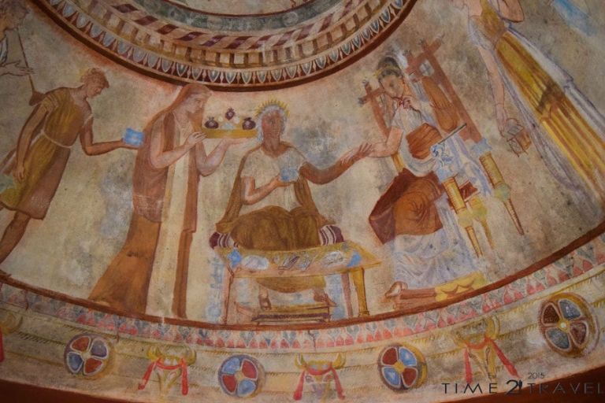
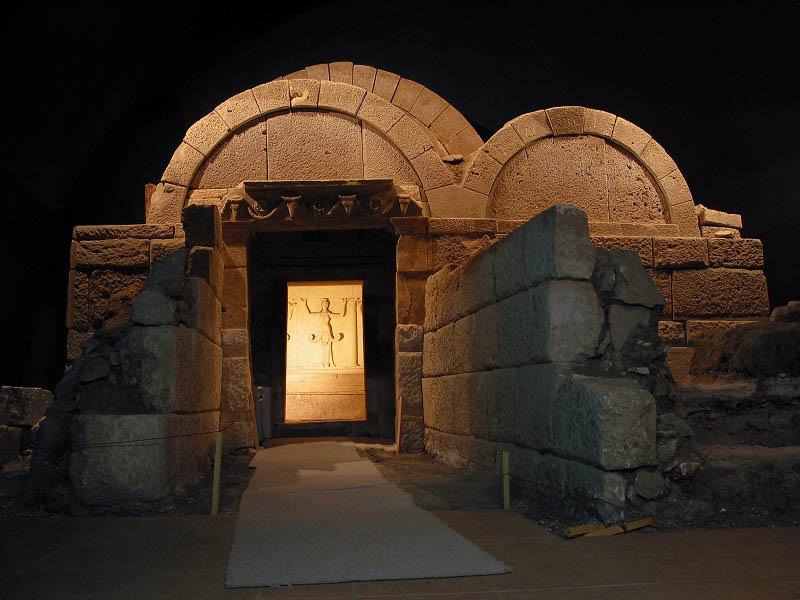

Тракийска гробница в Казанлък

Тракийската царска гробница се намира в град Казанлък, в парк Тюлбето. Състои се от коридор, правоъгълна предгробна камера и куполно кръгло помещение-същинската гробна камера. Подобен тип гробници са открити в Тракия, Русия, Мала Азия. Гробницата е изградена от тухли, които в коридора имат правоъгълна форма, споени с вар и пясък, а в гробната камера са с трапецовидна форма и са свързани помежду си с хоросан.
Гробницата е обгърната от каменна риза, от която пред входа на коридора се открояват два успоредни зида и се оформя предверие с размери 2,60 на 1,84 м.
Огромната си популярност, Казанлъшка гробница дължи на своите уникални стенописи, характерни за ранноелинистическата епоха. Едни от най-добре запазените образци от своето време. Стените на коридора и гробната камера за покрити с изящни и искрящи цветове и сцени, представящи отделни моменти от земния, военния и задгробния живот на положените в нея мъж и жена-царят и неговата царица.
Най-интересна е безспорно живописта в куполното помещение, която е разделена в няколко хоризонтални фриза, основният от които представя „Погребално угощение“. Гробницата, в която се влиза днес е точно копие на оригиналната, която се намира на няколко десетки метра от нея. Поради невъзможността за консервация на оригиналните стенописи, Оригиналът е затворен за всякакви посещения.
Тракийската гробница край Казанлък е първият български паметник, включен в световната съкровищница на ЮНЕСКО през 1979 г.
Знаете ли, че: Тракийската гробница в Казанлък е открита случайно на 19 април 1944г. по време на изкопни работи на противосамолетно убежище.
Тракийска гробница в Свещари

Недалеч от село Свещари, община Исперих, област Разград се намира прочутата Свещарска гробница. Един уникален паметник на тракийско-елинистическото изкуство и култура, датиран към края на ІV – първите десетилетия на ІІІ в. пр. Хр. Открита е по време на разкопки на Гинина могила през 1982 г. Определя се като царска гробница, в която по всяка вероятност според основните изследователи е погребан гетският владетел Дромихет.
Гробницата е част от могилен некропол и влизането в нея става само и единствено с екскурзовод при строги мерки. Размерите и са внушителни – дължина 7,5 м, ширина при фасадата 6,5 м, височина на гробната камера (отвътре) 4,45 м. Градежът е от големи варовикови блокове, предварително обработени. Състои се от: дромос и три помещения (предверие, странично помещение и гробна камера), всяко покрито с отделен свод.
Най-впечатляваща е гробната камера. Стените и са оформени като колонада с колони, долепени до стената. Каменните блокове под свода се поддържат от 10 женски фигури (кариатиди). Те са застанали с вдигнати ръце и са с височина 1,20 м. Много от детайлите в гробницата са останали недовършени, което свидетелства за внезапната смърт на владетеля и налагащото се обстоятелство той да бъде погребан в нея, преди да е довършена.
През 1985 г. Свещарската гробница е включена в Списъка на световното културно и световно наследство на Юнеско.
Предположение: Учените смятат, че погребаният владетел е именно Дромихет, а положената до него съпруга-дъщерята на Лизимах. След направен антропологичен анализ, данните показват медитеранския и произход, тоест напълно е възможно тя да е дъщерята на Лизимах.